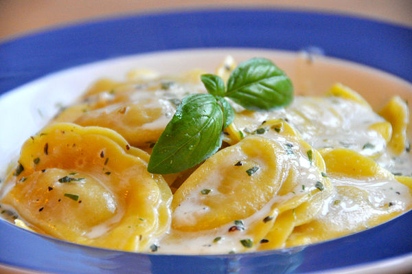

Ravioli

Description
Ravioli are a type of pasta comprising a filling enveloped in thin pasta dough
Usually served in broth or with a sauce, they originated as a traditional food in Italian cuisine. Ravioli are commonly
square, though other forms are also used, including circular and semi-circular
Ingredients
- 2 cups all-purpose flour
- 1 pinch salt
- 2 eggs
- 1 ½ tablespoons water
- 1 teaspoon olive oil
Instructions
- Mound flour and salt together on a work surface and form a well. Beat eggs, water, and olive oil in a bowl. Pour 1/2 of the egg mixture into the well. Begin mixing egg and flour with one hand; use your other hand to keep the flour mound steady. Add remaining egg mixture and knead to form a dough.
- Knead dough until smooth, 8 to 10 minutes; add more flour if the dough is too sticky. Form dough into a ball and wrap tightly with plastic. Refrigerate for 1 hour.
- While the dough is resting, prepare the ravioli filling: Mix ricotta cheese, cream cheese, mozzarella cheese, provolone cheese, egg, and parsley until well combined. Set the filling aside.
- Heat 2 tablespoons of olive oil in a skillet over medium heat. Stir in crushed garlic and pesto sauce and cook for one minute. Stir in heavy cream; increase the heat to high and bring to a boil. Reduce the heat and simmer for 5 minutes. Whisk in Parmesan cheese until melted. Remove the pan from the heat and keep warm.
- Meanwhile, warm marinara sauce over medium-low heat in a separate saucepan.
- Preheat the oven to 375 degrees F (190 degrees C). Beat egg and 1 tablespoon of water together in a small bowl to make the egg wash.
- Roll out the pasta dough into thin sheets no thicker than a nickel. To assemble the ravioli, brush the egg wash over a sheet of pasta. Drop cheese filling in 1-teaspoon portions onto the dough, 1-inch apart.
- Cover the filling with the top sheet of pasta; use your fingers to press around each portion of filling, making the seal as airtight as possible. Cut out individual ravioli with a knife or pizza cutter. Use your fingers to seal the edges.
- Fill a large pot with lightly salted water and bring to a rolling boil over high heat. Stir in the ravioli and return to a boil. Cook uncovered, stirring occasionally, until the ravioli float to the top and the filling is hot, 4 to 8 minutes. Drain well.
- Grease a baking sheet. Place the cooked ravioli on the baking sheet and bake in the preheated oven until brown, about 4 minutes.
- To serve, divide ravioli between four warmed serving bowls. Drizzle marinara sauce on top, followed by cream sauce.